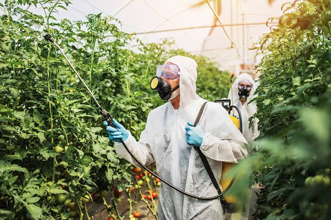
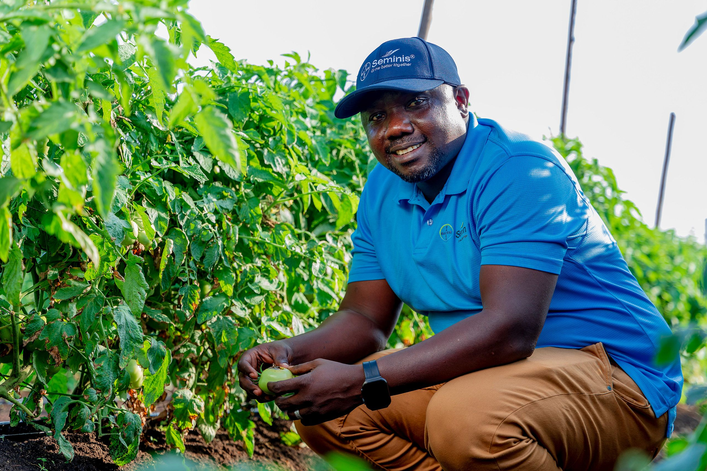
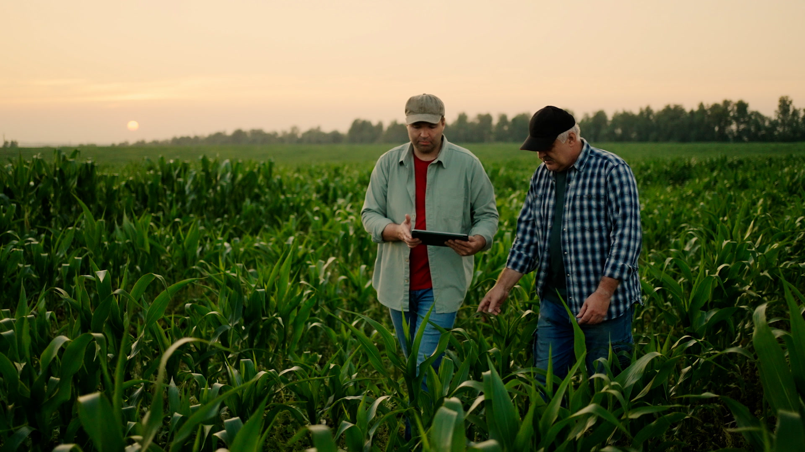
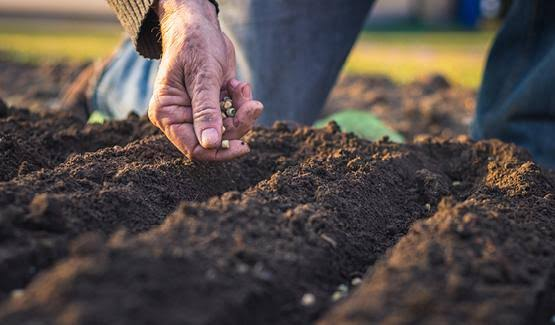
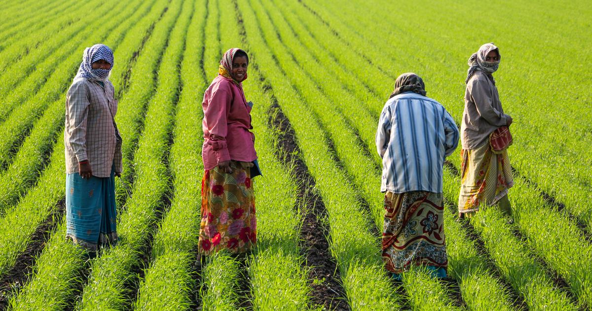

Machinery Rental & Lease
Find tractors, harvesters, rotavators, seed drills, sprayers, and other agricultural equipment.
Find MachineryFarmConnect helps farmers discover agricultural machinery, learn about crop safety, connect with agricultural experts, and access farming information in their preferred language.
Explore Services Request Machinery
Helpful digital tools designed to make farming easier, safer, and more accessible.
Find tractors, harvesters, rotavators, seed drills, sprayers, and other agricultural equipment.
Find Machinery
Learn about pest identification, crop protection, safe pesticide handling, and official agricultural guidance.
Learn More
Find out how to seek help from agricultural specialists for crop problems, soil health, and farming practices.
Find GuidanceTell us which equipment you need and when you need it.
Want to see who rents out machinery? View Machinery Owners
Listen to a sample farming message in your preferred language.
Select a language and listen to a short introduction to the FarmConnect platform.
Farmers who rent out or lease their machinery. Call the owner directly to agree on the date and the final price.

Healthy crops start with correctly identifying the problem and choosing an appropriate, approved solution.
Type a crop name to see its growth stages, common diseases, pest identification and crop management tips.
Get professional guidance for crop diseases, pest management, soil health, and agricultural practices.

Seek advice about crop growth, disease symptoms, pest identification, and crop management.
Open Crop Guidance Finder
Learn about soil testing, nutrient management, irrigation, and healthy farming practices.
Visit ICAR
Contact your local agriculture department or Krishi Vigyan Kendra for region-specific advice.
Find KVK Resources